Objective
The goal of this project was to get hands-on with Wazuh as both an intrusion detection system (IDS) and an intrusion prevention system (IPS) — learning how it flags suspicious activity and how it can be configured to actively block it. Alongside this, I wanted to properly understand a two-adapter network setup: an internal network for lab-only traffic, and a NAT adapter for internet-facing communication back to the monitoring server.Environment
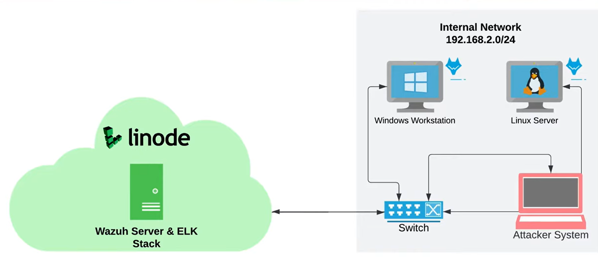
Three VirtualBox VMs:
- Wazuh Manager + Indexer + Dashboard: Deployed as a single Linode Compute Instance via Linode's Marketplace app (4GB plan), rather than run locally. This is a cloud-hosted service I connect my lab VMs to, not a VM I managedirectly through VirtualBox
- Ubuntu Desktop (Linux Server): fresh VirtualBox VM, running the Wazuh agent
- Windows 11 Workstation: existing VM, running the Wazuh agent
- Kali Linux (Attacker): existing VM used to generate attack traffic. Deliberately left without an agent, since it's the source of the activity being detected, not being monitored
Each local VM runs two network adapters:
- Adapter 1 - Internal Network: a private segment shared only between the three VMs, used for attack traffic between Kali and the targets
- Adapter 2 - NAT: gives each VM outbound internet access, so agents can reach the Wazuh manager's public IP
| VM | Internal IP |
|---|---|
| Ubuntu (Linux Server) | 192.168.2.10 |
| Windows Workstation | 192.168.2.20 |
| Kali (Attacker) | 192.168.2.30 |
Method
Deploying the Wazuh server
I used Linode's Marketplace (now labeled "Quick Deploy Apps") to spin up a single instance running the Wazuh manager, indexer, and dashboard together. After the ~15-minute install finished, I grabbed the generated dashboard credentials via SSH and logged into the web UI to confirm everything was healthy before touching any local VMs.
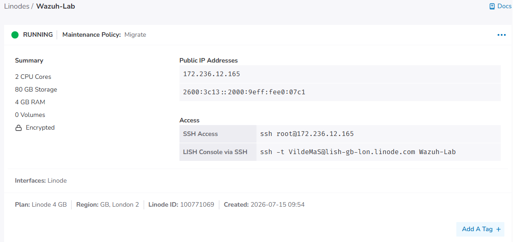
Connecting the first Agent
With the manager confirmed working, I generated an agent install command from the dashboard's "Add agent" flow and ran it on my Ubuntu VM.
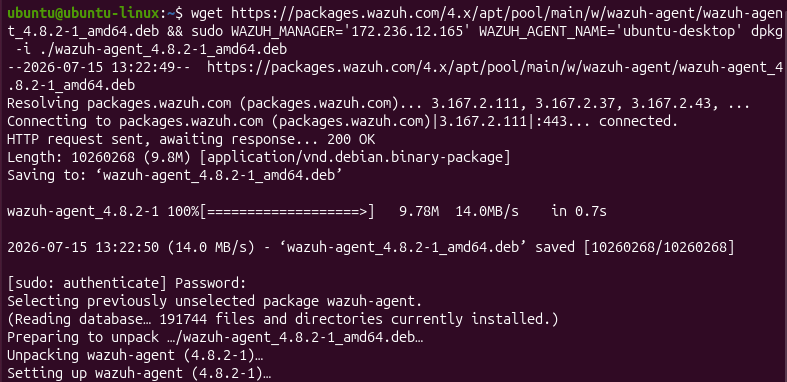
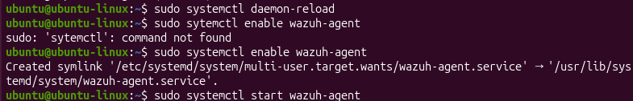
The agent installed and started, but didn't show as connected — checking the agent's own log (/var/ossec/logs/ossec.log) showed repeated Unable to connect to enrollment service at [172.236.12.165]:1515 errors. SSHing into the Linode instance and checking sudo ufw status confirmed the cause: UFW only allowed ports 22, 80, and 443 by default — 1514 and 1515 (the ports Wazuh agents use to enroll and communicate) weren't open at all.
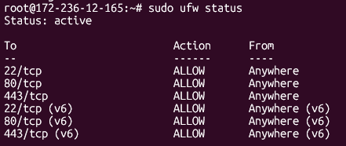
Fix:
sudo ufw allow 1514/tcp
sudo ufw allow 1515/tcp
sudo ufw reload
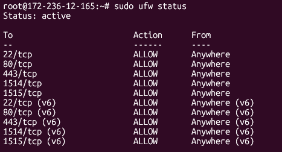
First agent successfully connected to the manager:
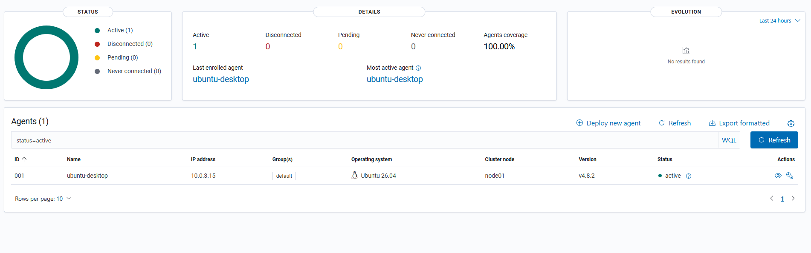
Once that was in place, the Ubuntu agent enrolled successfully. I repeated the same process for the Windows Workstation, which connected without issue since the firewall was already fixed.
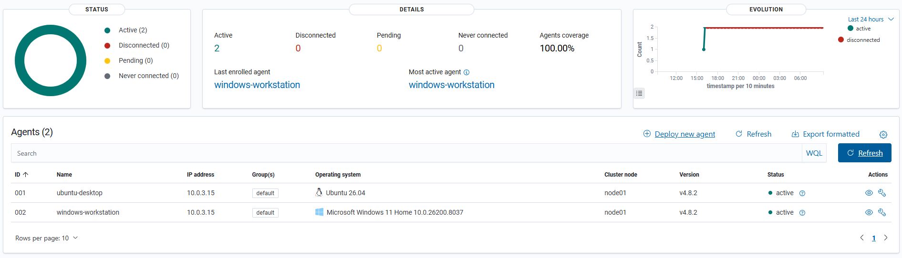
Fixing the internal network
Before running any attacks, I needed the internal network actually functioning end-to-end. I set static IPs on each VM's internal adapter (192.168.2.10/20/30) — on Ubuntu, I did this through the Settings GUI first, since I found it less error-prone than editing the netplan YAML directly by hand.
This didn't hold, though. The internal interface kept dropping out every ~45 seconds, and pings between Kali and Ubuntu
worked intermittently before failing again. Digging into journalctl -u NetworkManager showed the actual cause:
the netplan-generated connection profile (netplan-enp0s3) was still configured for DHCP underneath, regardless of what I'd
set in the GUI. Every 45 seconds it tried to get a DHCP lease, found no DHCP server on that segment (there isn't meant to be one),
gave up, and cycled again — which looked from the outside like the interface randomly disabling itself.
The real fix was editing the netplan config directly to disable DHCP and set the static address explicitly:
network:
version: 2
renderer: NetworkManager
ethernets:
enp0s3:
dhcp4: no
addresses:
- 192.168.2.10/24
After sudo netplan apply, the address held steady, and I confirmed it stayed up over a few minutes rather than just checking
once. Once the "cable connected" setting was also verified on both VMs' adapters, ping between Kali and Ubuntu worked reliably.
Performing the SSH brute-force attack
With the network stable, I enabled SSH on the Ubuntu VM (not on by default on Desktop editions) and confirmed port 22 was reachable from
Kali using nc -zv. I built a small custom wordlist that intentionally included the real password, then ran:
hydra -l ubuntu -P /tmp/small-list.txt ssh://192.168.2.10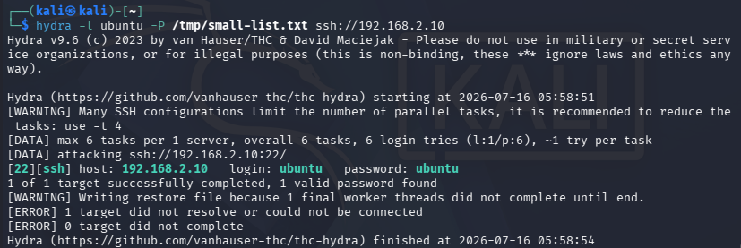
Reviewing the detection
Wazuh's Threat Hunting page gave a clean overview of the resulting activity — total events, authentication failures, authentication successes, and a breakdown by severity level.
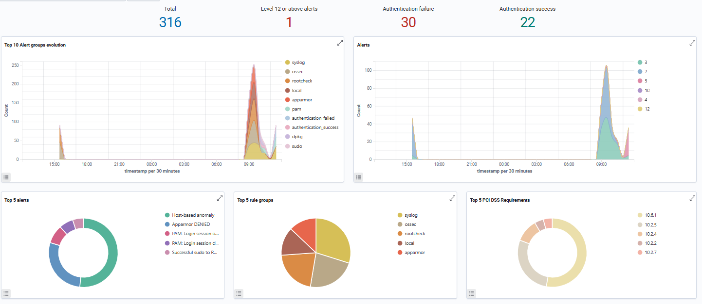
One alert stood out at severity level 12+, alongside two other notably high-scoring alerts: "sshd brute force trying to get access to the system" and "Multiple authentication failures followed by a success." Both correctly captured exactly what I'd done — repeated failed logins followed by the one attempt that used the correct password.
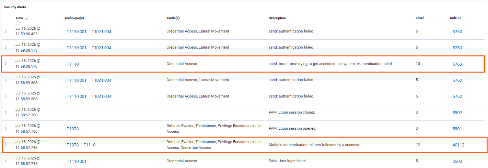
Clicking through to the associated MITRE ATT&CK technique gave additional context per alert: the broader attack category, what it typically leads to, likely threat actor motivations, and related techniques — genuinely useful input for thinking about this from a threat-modeling perspective rather than just "an alert fired."
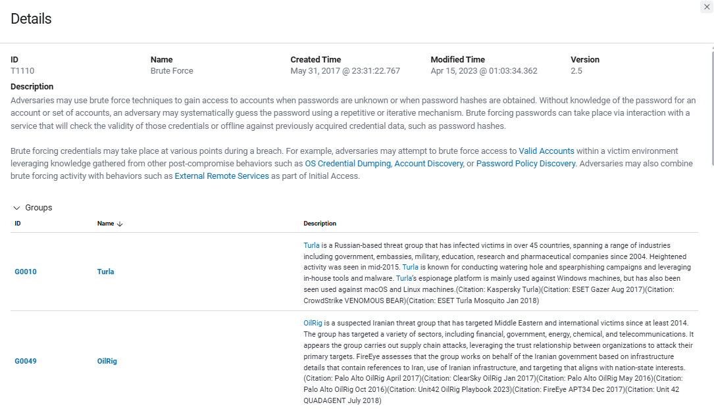
Unplanned bonus: real internet background noise
Since I'd left SSH open to "Anywhere" on the Linode server (needed for agent enrollment testing at the time), Wazuh also picked up a steady stream of real automated brute-force attempts from bots scanning the wider internet — source IPs from Hong Kong, the Netherlands, Nigeria, and elsewhere, none targeting me specifically, just routine scanning of any exposed port 22.
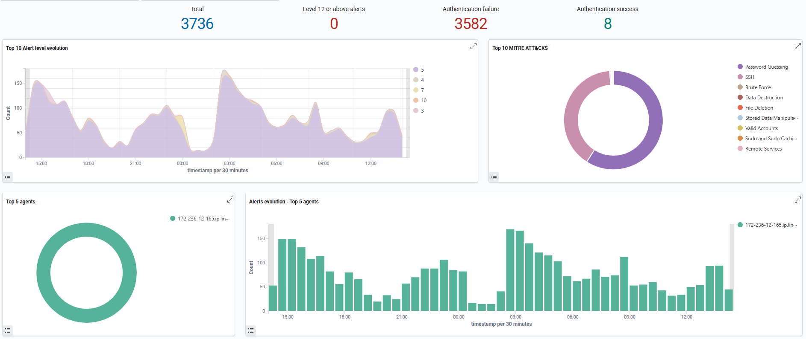
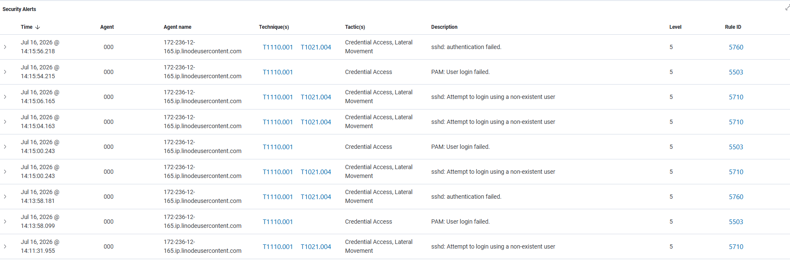
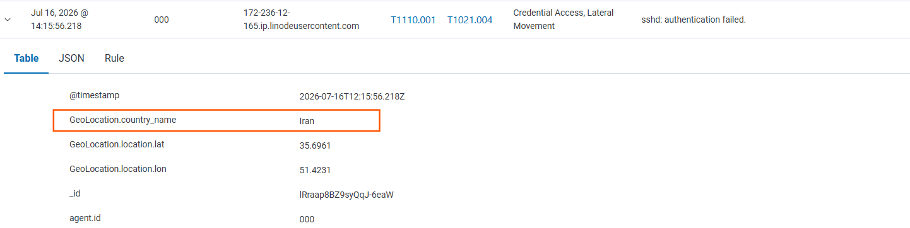
This gave me a good reason to actually apply the principle of least privilege to the firewall rather than just reading about it: I restricted SSH access on the Linode server to my own IP address only, leaving the dashboard (443) open more broadly since I need access to that from anywhere.
sudo ufw delete allow 22/tcp
sudo ufw allow from <my-ip> to any port 22 proto tcp
sudo ufw reload
Writing a prevention rule (IPS)
With detection confirmed, I moved on to the second half of the objective: actually blocking the attacker automatically rather than just logging the attempt. I added an active-response block to the manager's ossec.conf, tied to rule 40112, which is Wazuh's built-in rule for “multiple authentication failures followed by a success”, which is exactly the pattern my brute-force attack produces.
<active-response>
<command>firewall-drop</command>
<location>local</location>
<rules_id>40112</rules_id>
<timeout>1000</timeout>
</active-response>
My first attempt used <location>ubuntu-desktop</location>, assuming this told Wazuh which agent to run the block on. It didn't fire at all… Checking the documantation clarified that <location> only accepts one of three fixed keywords (local, defined-agent, or all), not an arbitrary agent name. Since the alert originates on the same host as I want to block, local (meaning “run the response on whichever endpoint generatedd the alert) was the correct option.
After correcting this and restarting the manager, which is required for any ossec.conf change to take effect, I reran the brute-force attack from Kali.
Confirming the block
The active-reponse log on Ubuntu showed the full response lifecycle firing correctly this time: triggered by rule 40112, targeting Kali's IP (192.168.2.30), executing the block, and completing
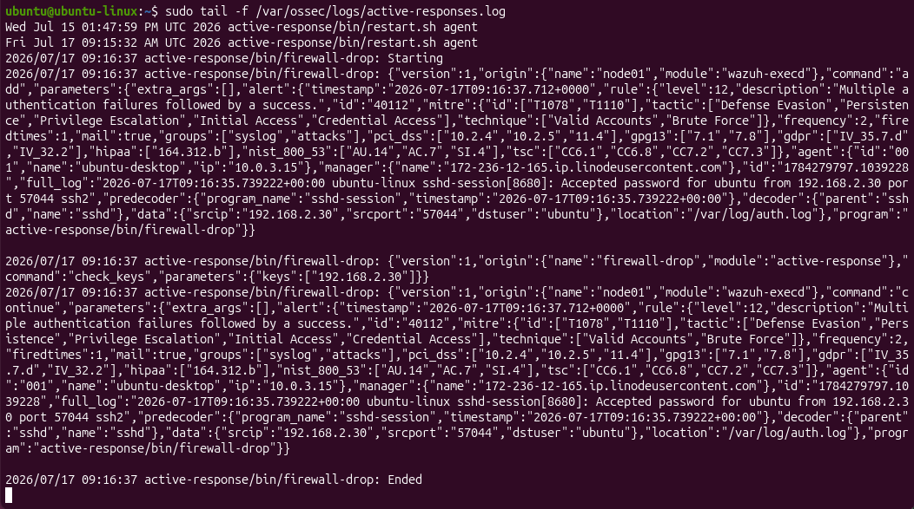
iptables -L confirmed the block was acctually in place, not just logged as attempt. Both the INPUT and FORWARD chains showed a new DROP rule
specifically targeting 192.168.2.30
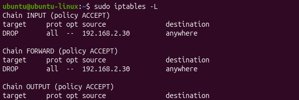
To prove this had a real effect rather than just existing on paper, I tired pinging Ubuntu from Kali immediatley after. Every packet timed out - Kali's own IP was now fully locked out of the internal network segment by the rule it had triggered.
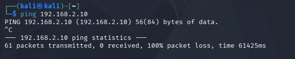
This closed the loop on the original objective: the same attack that Wazuh detected and alerted on earlier in the project was now being automatically detected and stopped, without any manual intervention once the rule was in place.
Reflection: Things looking correct on the surface
Working through the internal network issue was a good reminder that a config looking correct in one place (the GUI) doesn't mean it's correct everywhere underneath. The DHCP retry loop was invisible until I actually read the NetworkManager journal — the symptom (intermittent connectivity) told me almost nothing about the cause on its own.
Reflection: Differentiating targeted attacks from background noise
Seeing real, unsolicited attack traffic from around the world — alongside my own deliberately staged attack — was a useful contrast. It made the difference between "an alert fired" and "I am being targeted" much more concrete than it would have been from a textbook description alone. Both my sudo command and Windows' own background service logons also triggered detections, which was a good lesson in reading an alert's actual fields (user, process, logon type) rather than reacting to the label alone.
Reflection: MITRE ATT&CK
Wazuh's threat hunting view and MITRE ATT&CK integration made it much easier to reason about why an alert mattered, not just that it fired — closing the loop between detection and the kind of threat modeling I'd otherwise only be doing on paper.